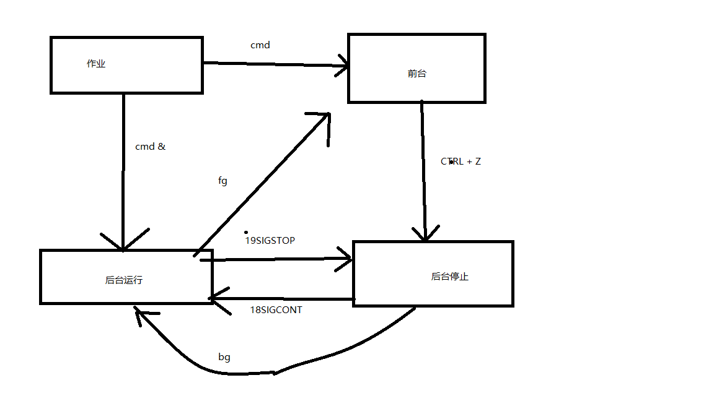

4. 2017-12-15-练习-进程管理和作业管理¶
4.1. 练习1-进程管理常用命令¶
具体参考：linux进程管理和系统状态常用命令简介
4.2. 练习2-作业管理练习¶
1、简述作业状态，并说明各个状态的切换
4.3. 练习3-计划任务at¶
1、 创建一个计划任务，10.20执行一次wall命令，查看计划任务并删除
[root@centos74 at]$ at 10:20
at> wall "wall message"
at> <EOT>
job 3 at Tue Dec 19 10:20:00 2017
[root@centos74 at]$ atq
3 Tue Dec 19 10:20:00 2017 a root
[root@centos74 at]$ at -c 3
[root@centos74 at]$ atrm 3
4.4. 练习4-计划任务cron¶
1、每天的2点和12点整，将/etc备份至/testdir/backup目录中，保存的文件名称格式为“etcbak-yyyy-mm-dd-HH.tar.xz”
[root@centos74 test]$ crontab -l
1 2,12 * * * /app/test/backup.sh
[root@centos74 test]$ cat /backup.sh
cat: /backup.sh: No such file or directory
[root@centos74 test]$ cat /app/test/backup.sh
#!/bin/bash
if [ ! -e /testdir/backup ] ; then
mkdir -pv /testdir/backup
fi
/usr/bin/tar --acl --xattrs -Jcvf /testdir/backup/etcbak-`date +%Y-%m-%d-%H`.tar.xz /etc
You have new mail in /var/spool/mail/root
2、每周2, 4, 7备份/var/log/messages文件至/logs目录中，文件名形如“messages-yyyymmdd”
[root@centos74 test]$ crontab -l
1 2,12 * * * /app/test/backup.sh
1 1 * * 2,4,7 /app/test/backup_message.sh
[root@centos74 test]$ cat backup_message.sh
#!/bin/bash
if [ ! -e /logs ] ; then
mkdir -pv /logs
fi
cp -a /var/log/messages /logs/message-$(date "+%Y%m%d")
You have new mail in /var/spool/mail/root
3、每两小时取出当前系统/proc/meminfo文件中以S或M开头的信息追加至/tmp/meminfo.txt文件中
[root@centos74 test]$ crontab -l
1 2,12 * * * /app/test/backup.sh
1 1 * * 2,4,7 /app/test/backup_message.sh
1 */2 * * * /app/test/meminfo.sh
You have new mail in /var/spool/mail/root
[root@centos74 test]$ cat meminfo.sh
#!/bin/bash
cat /proc/meminfo |egrep "^(S|M).*" >> /tmp/meminfo.txt
4、工作日时间，每10分钟执行一次磁盘空间检查，一旦发现任何分区利用率高于80%，就执行wall警报
[root@centos74 test]$ crontab -l
1 2,12 * * * /app/test/backup.sh
1 1 * * 2,4,7 /app/test/backup_message.sh
1 */2 * * * /app/test/meminfo.sh
*/10 * * * * /app/test/disk_check.sh
[root@centos74 test]$ cat disk_check.sh
#!/bin/bash
val=$(df --output=pcent |egrep "[0-9]+" -o |sort -nr |head -n 1)
if [ "$val" -gt 80 ] ; then
wall "disk 80%"
fi